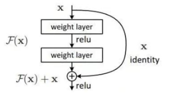
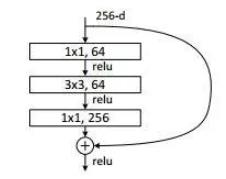

对于PyTorch的学习，基于Colab平台，主要内容来自于OUCTheoryGroup

因为这里的步长stride是1，所以两个feature map的尺寸是一样的，但如果channel数是不同的，那么也无法做加法操作，所以在init的过程中添加了一个if判断条件，对feature map进行一下处理。
1 2 3 4 5 6 7 8 9 10 11 12 13 14 15 16 17 18 19 20 21 22 23 24 25 26 27 28 29 30 31 32 33 import torchimport torch.nn as nnimport torch.nn.functional as Fimport torchvisionimport torchvision.transforms as transformsimport matplotlib.pyplot as pltimport numpy as npimport torch.optim as optimclass BasicBlock (nn.Module) : def __init__ (self, in_planes, planes, stride=1 ) : super(BasicBlock, self).__init__() self.conv1 = nn.Conv2d(in_planes, planes, kernel_size=3 , stride=stride, padding=1 , bias=False ) self.bn1 = nn.BatchNorm2d(planes) self.conv2 = nn.Conv2d(planes, planes, kernel_size=3 , stride=1 , padding=1 , bias=False ) self.bn2 = nn.BatchNorm2d(planes) self.shortcut = nn.Sequential() if stride != 1 or in_planes != planes: self.shortcut = nn.Sequential( nn.Conv2d(in_planes, planes, kernel_size=1 , stride=stride, bias=False ), nn.BatchNorm2d(planes) ) def forward (self, x) : out = F.relu(self.bn1(self.conv1(x))) out = self.bn2(self.conv2(out)) out += self.shortcut(x) out = F.relu(out) return out
为了实际计算的考虑，作者提出了一种bottleneck的结构块来代替上面的 Residual block，它像Inception网络那样通过使用1x1 conv来巧妙地缩减或扩张feature map维度从而使得 3x3 的卷积核数目不受外界即上一层输入的影响，自然它的输出也不会影响到下一层，具体图示如下：

1 2 3 4 5 6 7 8 9 10 11 12 13 14 15 16 17 18 19 20 21 22 23 24 25 26 class Bottleneck (nn.Module) : expansion = 4 def __init__ (self, in_planes, planes, stride=1 ) : super(Bottleneck, self).__init__() self.conv1 = nn.Conv2d(in_planes, planes, kernel_size=1 , bias=False ) self.bn1 = nn.BatchNorm2d(planes) self.conv2 = nn.Conv2d(planes, planes, kernel_size=3 , stride=stride, padding=1 , bias=False ) self.bn2 = nn.BatchNorm2d(planes) self.conv3 = nn.Conv2d(planes, self.expansion*planes, kernel_size=1 , bias=False ) self.bn3 = nn.BatchNorm2d(self.expansion*planes) self.shortcut = nn.Sequential() if stride != 1 or in_planes != self.expansion*planes: self.shortcut = nn.Sequential( nn.Conv2d(in_planes, self.expansion*planes, kernel_size=1 , stride=stride, bias=False ), nn.BatchNorm2d(self.expansion*planes) ) def forward (self, x) : out = F.relu(self.bn1(self.conv1(x))) out = F.relu(self.bn2(self.conv2(out))) out = self.bn3(self.conv3(out)) out += self.shortcut(x) out = F.relu(out) return out
1 2 3 4 5 6 7 8 9 10 11 12 13 14 15 16 17 18 device = torch.device("cuda:0" if torch.cuda.is_available() else "cpu" ) transform_train = transforms.Compose([ transforms.RandomCrop(32 , padding=4 ), transforms.RandomHorizontalFlip(), transforms.ToTensor(), transforms.Normalize((0.4914 , 0.4822 , 0.4465 ), (0.2023 , 0.1994 , 0.2010 ))]) transform_test = transforms.Compose([ transforms.ToTensor(), transforms.Normalize((0.4914 , 0.4822 , 0.4465 ), (0.2023 , 0.1994 , 0.2010 ))]) trainset = torchvision.datasets.CIFAR10(root='./data' , train=True , download=True , transform=transform_train) testset = torchvision.datasets.CIFAR10(root='./data' , train=False , download=True , transform=transform_test) trainloader = torch.utils.data.DataLoader(trainset, batch_size=128 , shuffle=True , num_workers=2 ) testloader = torch.utils.data.DataLoader(testset, batch_size=128 , shuffle=False , num_workers=2 )
1 2 3 4 5 6 7 8 9 10 11 12 13 14 15 16 17 18 19 20 21 22 23 24 25 26 27 28 29 30 31 32 33 34 35 36 37 38 class ResNet18 (nn.Module) : def __init__ (self) : super(ResNet18, self).__init__() self.num_classes = 10 self.in_planes = 64 self.conv1 = nn.Conv2d(3 , 64 , kernel_size=3 , stride=1 , padding=1 , bias=False ) self.bn1 = nn.BatchNorm2d(64 ) self.layer1 = self._make_layer(BasicBlock, 64 , 2 , stride=1 ) self.layer2 = self._make_layer(BasicBlock, 128 , 2 , stride=2 ) self.layer3 = self._make_layer(BasicBlock, 256 , 2 , stride=2 ) self.layer4 = self._make_layer(BasicBlock, 512 , 2 , stride=2 ) self.linear = nn.Linear(512 , self.num_classes) def _make_layer (self, block, planes, num_blocks, stride) : strides = [stride] + [1 ]*(num_blocks-1 ) layers = [] for stride in strides: layers.append(block(self.in_planes, planes, stride)) self.in_planes = planes return nn.Sequential(*layers) def forward (self, x) : out = F.relu(self.bn1(self.conv1(x))) out = self.layer1(out) out = self.layer2(out) out = self.layer3(out) out = self.layer4(out) out = F.avg_pool2d(out, 4 ) out = out.view(out.size(0 ), -1 ) out = self.linear(out) return out
实例化网络：
1 2 3 4 net = ResNet18().to(device) criterion = nn.CrossEntropyLoss() optimizer = optim.Adam(net.parameters(), lr=0.001 )
1 2 3 4 5 6 7 8 9 10 11 12 13 14 15 16 for epoch in range(10 ): for i, (inputs, labels) in enumerate(trainloader): inputs = inputs.to(device) labels = labels.to(device) optimizer.zero_grad() outputs = net(inputs) loss = criterion(outputs, labels) loss.backward() optimizer.step() if i % 100 == 0 : print('Epoch: %d Minibatch: %5d loss: %.3f' %(epoch + 1 , i + 1 , loss.item())) print('Finished Training' )
1 2 3 4 5 6 7 8 9 10 11 12 13 14 correct = 0 total = 0 for data in testloader: images, labels = data images, labels = images.to(device), labels.to(device) outputs = net(images) _, predicted = torch.max(outputs.data, 1 ) total += labels.size(0 ) correct += (predicted == labels).sum().item() print('Accuracy of the network on the 10000 test images: %.2f %%' % ( 100 * correct / total))